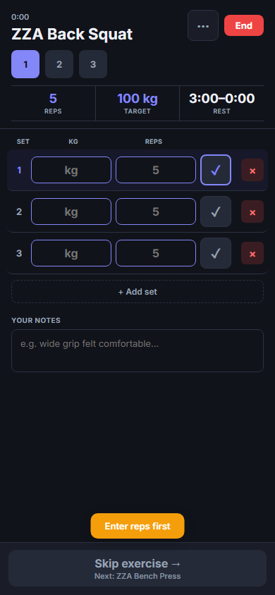
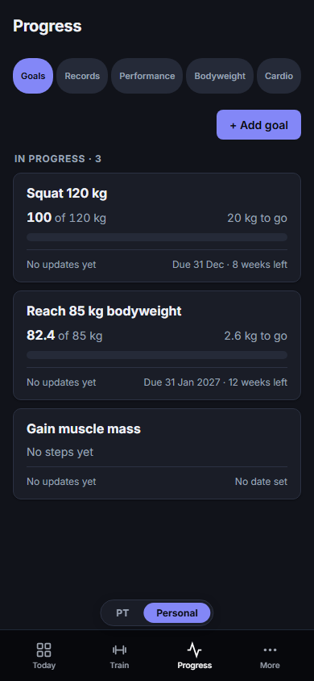
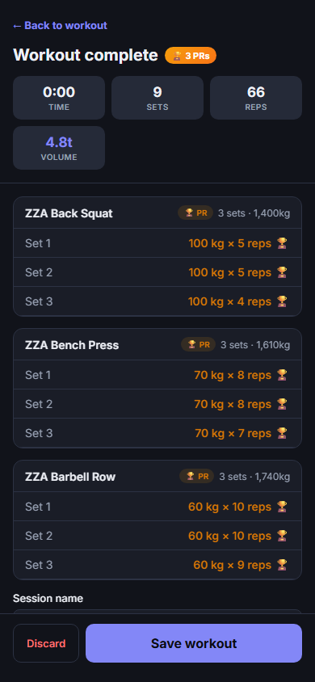
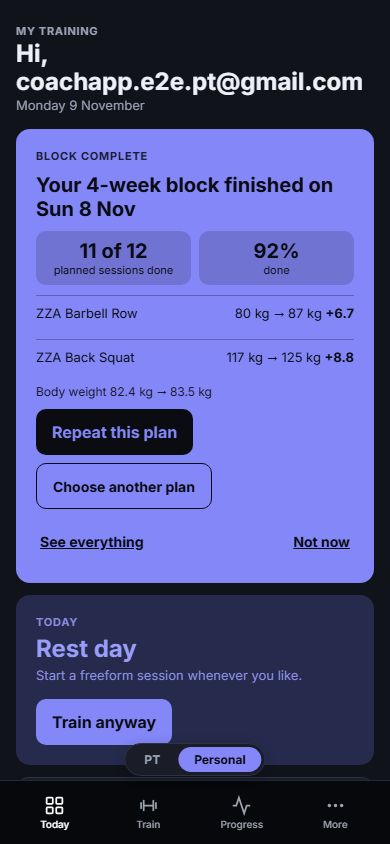

Solo lifter, no coach · 3 days a week · 8 November 2026
The app tells you what to train today in under a second. It is much slower at logging, and it can't yet tell you to add weight or show that a goal is moving. A lifter would likely try it for a block, then go back to a tracker that pre-fills sets.
| Question | Answer | What happened |
|---|---|---|
| What should I do today? | Yes, instantly | Today shows the workout name, "Session 1 of 3 this week" and a Start button at the top. This is the app's strongest moment. |
| Am I getting stronger? | Only at the end | The end-of-block card says so clearly, for two lifts. For the four weeks before that you open each lift separately. |
| Am I progressing towards my goals? | No, and it misleads | After squatting 107.5kg against a 100kg start and logging 83.5kg bodyweight, both goals read "0%" or their starting value with "No updates yet". |




I used the current master build in a phone-sized touch browser (390×844) against the real database, and I tapped through the real screens. I logged 12 sessions and 12 weigh-ins, moving the browser's date forward to cover 12 Oct to 9 Nov.
Result: completed, about 35 interactions to build and 33 to log. Building three exercises took 10 interactions each, because a new exercise opens a long form that starts at 1 set and 0 reps. Logging needed weight, reps and a tick on all nine sets.
Result: completed, and quicker than expected once the model clicked. You build one week and duplicate it, which turns 12 sessions into 2 workouts and about 18 interactions, not counting building the workouts.
Result: 11 of 12 sessions, one deliberately missed. Finding the day's session stayed effortless. The repeated typing got worse every week.
Result: easy to create, then disconnected from everything. The form is short and the examples help. A goal has no link to an exercise or to bodyweight, so all progress is typed by hand through Update progress. Today lists goals with days remaining but no progress.
Result: the most complete feature. Logging is one field and one button on Today. The chart with a 7-day average shows a clear trend, and the history is grouped by month. I logged 12 entries and could see +1.1kg at once.
| Question | Answer | How I got there |
|---|---|---|
| Stronger than 4 weeks ago? | Per lift | Open each of 6 lifts. The block card shows only two. |
| Which improved most? | Roughly | Block card shows two. Otherwise compare by eye, as the lists aren't ranked. |
| Which stalled? | By inference | A 0% row in Blocks, if you find it. Nothing is flagged as stalled. |
| Did volume increase? | Yes | Sessions weekly chart, kg view: 13.8k in week 1 to 14.2k in week 4, with 9.4k in the missed-session week. Three taps. |
| Bodyweight change? | Yes | 82.4 to 83.5kg, on Today and Bodyweight. |
| Progress to goals? | No | Goals show their starting values. |
| Best sessions? | No | Scan 11 cards. "vs last time" helps, but nothing ranks them. |
| Week 4 vs Week 1? | No | No side-by-side view. Weekly totals only. |
| What next? | No | Repeat or choose another plan. No advice. |
The numbers are mostly there, and the charts are good. What is missing is the story: nothing joins them into "here is what happened and what to do".
Four tabs (Today, Train, Progress, More) are simple, with large targets (94×63). Dead ends are rare. The cost is depth: Plans sits behind a switch in Train, Goals behind a chip in Progress, and Calendar behind a link on Today.
The weakest area of the design. The same thing has several names: workout, template, session, plan, training plan, programme, phase, block. Most forms are bottom sheets, while Add phase is inline. History appears in two places, in two formats. The same workout appears twice in Your workouts once a plan uses it, with its count split (4 times and 1 time). The plan picker said "Not used yet" for a workout done the day before.
Today and the logger are clear about the next action. Elsewhere the same purple marks everything: on the workout screen Start and Save sit side by side at equal weight. Delete week is a large red block beside Duplicate week.
Workouts, plans, bodyweight and progress are quick to find. History is the exception: the list on Train is collapsed by default and shows only a date, while the useful version is under Progress, Performance, Sessions.
The set form shows type, set structure, reps range, weight, rest range, RPE/RIR, bodyweight and AMRAP at once. Expert controls should sit behind a default. In the gym you must remember what to add, because the app doesn't say.
| Task | Interactions | Should be | Where the waste is |
|---|---|---|---|
| Build a 3-exercise workout | ~35 | ~15 | Separate reps min and max boxes, stepper from 1, closing the form per exercise |
| Log 9 sets, 3 exercises | ~33 | ~13 | Typing accepted values, Finish confirm then Save, 1RM pop-up |
| Build the 4-week plan, workouts made | ~18 | ~10 | Compulsory phase, separate name form, separate date form |
| Log bodyweight | 2 | 2 | None |
| Create a goal | 5 to 6 | 2 to 3 | Start value and target should come from your data |
Measured, the basics are right: 44px ticks, numeric keypads, 16px inputs that shouldn't trigger zoom, and a fixed primary button at the bottom. Concerns are the top-corner End button (56×30), 32×32 red delete buttons right beside the tick, and the rest banner pushing the table down 65px straight after you tap. Reach and keyboard were not tested on a real phone.
Weight, plan and 1RM actions show clear green messages, and an unfinished session offers Resume. The gaps are Save workout, where I saw no message and the button just vanishes, and "Enter reps first", which blames the user for not typing what the screen already shows. After reload, the Resume offer appears only once you tap Start.
On Today and Performance, contrast was almost clean: one chart number at 4.0:1, all others at 4.5:1 or better. Buttons have labels. Performance has 42 pieces of text under 12px, down to 9px, which is hard to read mid-workout. Sheet close buttons are 27×26. Status colours are paired with ✓ and × on the week strip, which is good. Screen reader and keyboard use were not tested.
| Area | Supported? | Why |
|---|---|---|
| Adherence | Partly | The week strip and sessions-done count are strong. There are no reminders and no catch-up. |
| Motivation | Partly | The block card lands well. First-session trophies are empty and later wins are small. |
| Habit formation | Weak | No notification, no routine prompt, and a web app that has to be opened by hand. |
| Progressive overload | Weak | Data is captured but never turned into an instruction. This is the central job for this lifter. |
| Long-term engagement | Partly | Lift history compounds nicely. Nothing changes the experience at month three. |
| Accountability | Weak | A red cross is the only consequence of missing. No weekly review, no sharing. |
Where users feel it. Confused at "phase" and "Add to my plan". Uncertain whether grey numbers count. Frustrated by the 27th typed number. Unmotivated by a goal stuck at 0%. Lost after a missed session and on the first day after a block if they tap Not now.
| App | Solves better | What to learn |
|---|---|---|
| Hevy | Fast logging, routines, a social feed, and a generous free tier | The feed creates a reason to return that CoachApp lacks entirely |
| Strong | Minimal, quick logging and a mature Apple Watch app | Remove every step between the rack and the saved set |
| Alpha Progression | A specific weight and rep target for each working set from your history, double progression, mesocycles with deloads | The direct answer to this persona's main need |
| Boostcamp | A large program library, auto progression (linear, double, missed-rep), per-muscle volume | Ready-made programs remove the build step altogether |
| TrainHeroic | Leaderboards, readiness insights, a coach program marketplace | Closest model to CoachApp's coach side, and a route to revenue |
Where CoachApp is already ahead or level: the Today screen's clarity, Duplicate week, a live preview of periodization, the end-of-block review, works in any browser, and a coach and client can share one product. That last point is its real differentiator, and a pure solo lifter gets no benefit from it.
Sources: Lyfta comparison, Setgraph comparison, Alpha Progression, Boostcamp Pro, Boostcamp features, TrainHeroic. Most of these are vendors describing themselves or rivals.
Every issue I found. Colour on the left edge matches priority.
"Business impact" assumes a future paid or wider release, since there are no clients on the app today. Complexity is a product estimate; I did not read the code to size it.